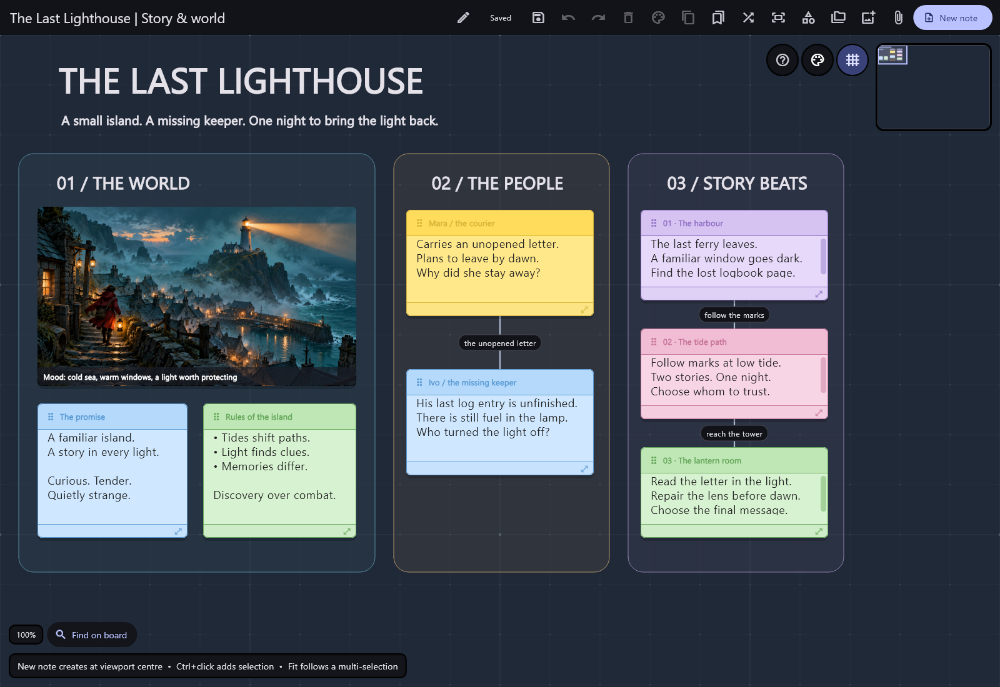
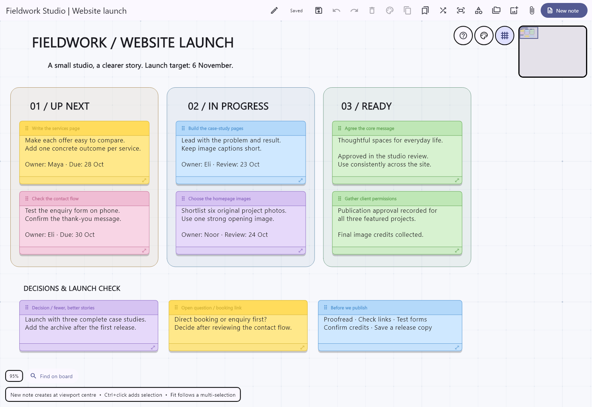
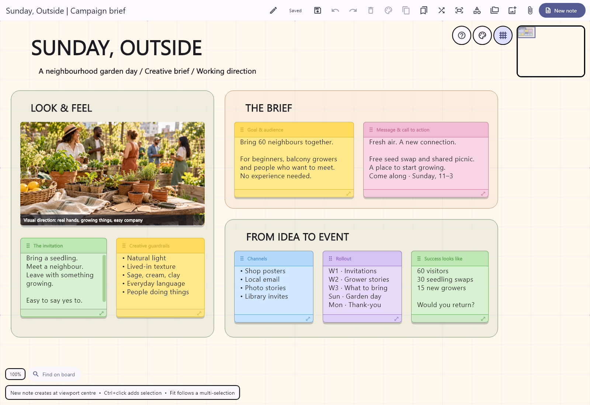

A spacious board for everything you're working on.
Lay out notes, pictures, documents and links, connect what belongs together, and come back to it later. Vasmim is for projects that don't fit in a list: stories, campaigns, launches, research, plans.
A portable ZIP with no installer. The app is unsigned, so Windows may show an unknown-publisher warning the first time. Read the install notes first.

Everything in one place
Keep the whole project in view instead of spread across folders, tabs and lists.
Notes, images and headings
Write freely, drop in pictures and GIFs, and give your board a clear structure.
Connect your thinking
Draw labelled connections between notes and images to show how ideas relate.
Documents and media
Keep PDFs, Office files, audio, video and YouTube links right next to the notes they belong to.
Ready-made starters
Begin from a blank board, a Kanban, an Eisenhower matrix, a SWOT or a campaign brief.
Find your way back
Search one board or your whole library, and save named views to return to.
Careful with your work
Autosave, a recovery copy of the previous save, and backups you can verify, all on your own computer.


Good to know
Try the sample boards
The three boards in these pictures are free to download. Import one into Vasmim to see how it is put together, then change anything you like. The projects in them are fictional.